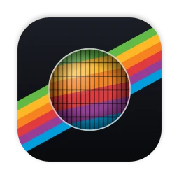

TapDeck vs BetterTouchTool
A simpler trackpad gesture app for Mac, compared fairly.
BetterTouchTool is a powerful, long-standing Mac app that can customise almost every input device. If you love building your own setup from scratch, it's excellent.
TapDeck is for people who mainly want one thing: tap the trackpad, and the right shortcut runs in the app you're in, without spending an evening configuring it.
The short version
| TapDeck | BetterTouchTool | |
|---|---|---|
| Focus | Trackpad taps and holds that run shortcuts | Trackpad, mouse, keyboard, Touch Bar, window snapping and much more |
| Getting started | 46 ready-made packs: switch one on per app | Mostly built by you, trigger by trigger |
| Per-app gestures | Automatic: packs follow the app in front | Supported, set up per app |
| Your own gestures | Do the gesture on the trackpad, pick an action, save | Very flexible, with many trigger types |
| Remembering gestures | Cheat sheet on a 5-finger double tap | Up to you |
| Price | $9 a year, up to 3 Macs | See folivora.ai |
Choose TapDeck if
- You want trackpad gestures working in minutes, not a weekend.
- You live in a browser, terminal, code editor or creative app and want its shortcuts on your fingers.
- You use Claude Code or Codex: TapDeck runs /compact, /usage and /model with a tap.
Choose BetterTouchTool if
- You want to customise your mouse, keyboard and Touch Bar too, or use advanced scripting.
- You enjoy building and maintaining a detailed setup.
Try before you decide
You can try TapDeck's gestures in your browser right now. If it fits, it's $9 a year for up to 3 Macs.
New to custom gestures? Read how custom trackpad gestures work on Mac.
BetterTouchTool is a trademark of its owner. TapDeck is not affiliated with it.